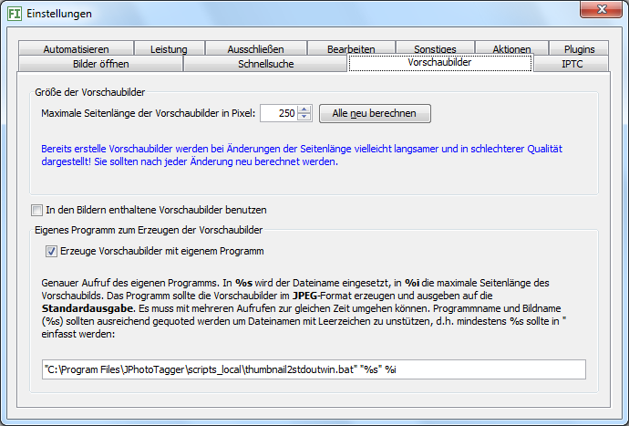

Die Vorschaubilder werden so groß berechnet wie Sie hier angeben. Ändern Sie die Größe (später), sollten Sie die Vorschaubilder neu berechnen lassen. Klicken Sie dazu auf die Schaltfläche Alle neu berechnen. Während der Aktualisierung können Sie den Einstellungen-Dialog schließen und weiterarbeiten. Der Fortschritt wird in einem anderen Dialog angezeigt, den Sie nicht schließen sollten, außer Sie wollen keine weiteren Vorschaubilder berechnen lassen.
Kreuzen Sie hier an, werden die Vorschaubilder geladen, die in den Bildern eingebettet sind. Das geht schneller, als die Vorschaubilder zu berechnen, aber manchmal sind die eingebetteten Vorschaubilder von geringer Qualität.
Die Vorschaubilder werden berechnet mit Imagero
(http://reader.imagero.com/). Sie können diese mit
einem beliebigen anderen Programm erzeugen lassen, sofern dies
JPEGs an die Standardausgabe
liefern kann. Ein anderes Programm ist sinnvoll, falls:
In dieser Hilfe gibt es ein Beispiel.
